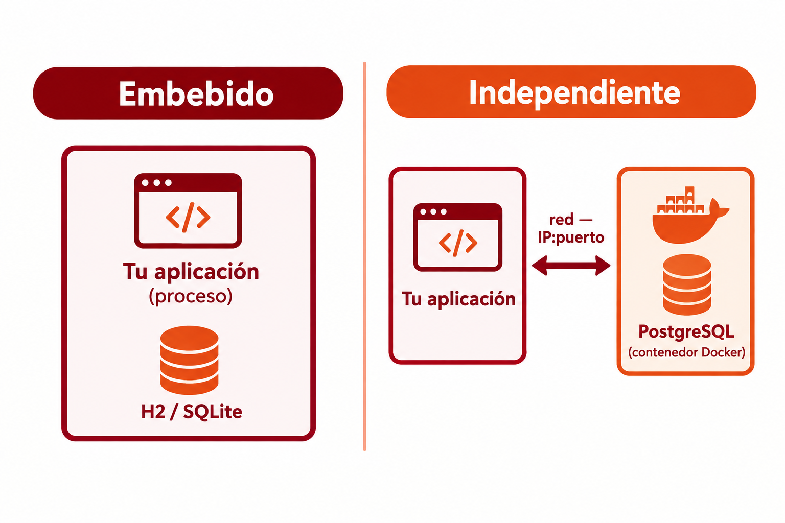

🧩 2. Conectores y protocolos de acceso a bases de datos¶
Descarga de diapositivas
Conoces SQL y bases de datos relacionales desde 1º de DAM — pero hasta ahora las has usado siempre desde una herramienta externa (un cliente SQL, un script). En el apartado anterior has visto que el repository es la capa que habla con la base de datos, sin entrar en cómo lo hace por dentro. Este apartado responde a esa pregunta: ¿cómo habla tu programa Java, con sus clases y objetos, con una base de datos que solo entiende tablas y filas?
🧩 El problema de partida: objetos contra tablas¶
Imagina una clase Editorial con una lista de Libro — la misma pareja de clases que vas a usar durante todo este tema:
Y, en la base de datos, dos tablas relacionadas por clave foránea:
| SQL | |
|---|---|
Aunque representan la misma idea, la forma de trabajar con cada una es distinta:
- Tipos que no coinciden: Java tiene
List<Libro>,LocalDate,boolean; SQL tieneINT,VARCHAR,DATE. No hay una correspondencia 1:1 automática. - Relaciones expresadas de forma distinta: en Java, una editorial contiene su lista de libros (una referencia en memoria); en SQL, esa misma relación es una clave foránea en la tabla
libro— la dirección de la flecha depende de quién almacena la referencia a quién, y hace falta unJOINpara reconstruirla. - Identidad: en Java, dos objetos son iguales si
==los considera el mismo (o siequals()lo dice); en la base de datos, la identidad de una fila es su clave primaria. Son dos formas distintas de responder a "¿es esto lo mismo que aquello?".
Esta diferencia de fondo tiene nombre: desfase objeto-relacional (impedance mismatch). No es un error de diseño de nadie — es que los dos mundos, orientado a objetos y relacional, modelan la información de forma distinta por naturaleza. Todo lo que vas a ver en este tema existe para tender puentes sobre ese desfase — empezando por la propia herramienta que lo resuelve.
🌉 La solución: una herramienta ORM¶
Vas a resolver este desfase con una herramienta ORM (Object-Relational Mapping): declaras, una sola vez, las reglas de correspondencia entre una clase y una tabla — y a partir de ahí, guardar, actualizar y consultar objetos se traduce automáticamente al SQL correspondiente, sin que lo escribas tú. Todo lo que verás en este tema —las anotaciones de más abajo, el CRUD completo, las consultas dinámicas, JPQL— son, en el fondo, distintas caras de esa misma herramienta.
"ORM" es solo el concepto general. En Java se concreta en dos piezas que conviene no confundir:
JPA (Jakarta Persistence API) es la especificación estándar de Java: el documento de reglas que dice qué anotaciones (@Entity, @Id, @OneToMany...) y qué operaciones debe ofrecer cualquier ORM que quiera usarse en Java — sin ejecutar nada por sí sola, igual que una interfaz Java declara qué métodos debe tener una clase sin decir cómo funcionan por dentro.
Hibernate es quien cumple esas reglas de verdad: la implementación de JPA más usada, el motor que traduce cada anotación en el SQL real que llega a PostgreSQL.
| Nombre | Qué es | Su equivalente en POO |
|---|---|---|
| JPA | El contrato: qué debe ofrecer un ORM en Java | Una interfaz |
| Hibernate | Quien lo cumple: el motor que hace el trabajo real | Una clase que la implementa |
flowchart TB
A["🌉 ORM<br/>(el concepto)"] --> B["📜 JPA<br/>(la especificación estándar de Java)"]
B --> C["⚙️ Hibernate<br/>(la implementación más usada)"]
C --> D["🧰 Spring Data JPA<br/>(capa de comodidad: los repositorios)"]Spring Data JPA (el JpaRepository que vas a usar durante todo este tema) no es un ORM distinto — es una capa adicional de comodidad por encima de JPA/Hibernate: te genera automáticamente implementaciones de repositorios (save, findById, findAll...) para que ni siquiera tengas que escribir el código que usa directamente las anotaciones JPA.
Hibernate no es la única opción
Es la implementación de JPA más usada en el mundo Java, pero no la única — EclipseLink es otra implementación completa de la misma especificación (la misma interfaz, otra clase distinta que la cumple). Fuera de Java, cada lenguaje tiene su propio ORM con la misma idea de fondo (SQLAlchemy en Python, Entity Framework en C#): el mapeo objeto-relacional no es un invento exclusivo de Hibernate ni de Java.
Las anotaciones que vas a ver más abajo (@Entity, @Id, @OneToMany...) son, literalmente, cómo se declara ese mapeo — hoy las vas a leer como "así defines la estructura de la base de datos", pero por debajo es la propia herramienta ORM en funcionamiento.
🔌 JDBC y los conectores de bases de datos¶
Para que tu programa Java pueda comunicarse con una base de datos necesita un conector —también llamado driver— preparado para ese gestor concreto. PostgreSQL tiene su propio driver, MySQL tiene otro y SQL Server tiene el suyo.
Sin embargo, no tendría sentido aprender una forma completamente distinta de programar para cada base de datos. Java resuelve este problema mediante JDBC (Java Database Connectivity): una API estándar que define una forma común de acceder a bases de datos relacionales desde una aplicación Java.
Tu aplicación utiliza JDBC, y el driver concreto se encarga de traducir esas operaciones para que las entienda el gestor que estés usando:
flowchart LR
A["☕ Tu código Java<br/>(programa contra JDBC)"] --> B["🔌 Driver JDBC<br/>(uno por gestor)"]
B --> C[("🐘 PostgreSQL")]La ventaja es que la forma general de programar el acceso a los datos se mantiene aunque cambie el gestor. Si una aplicación pasara de PostgreSQL a MySQL, habría que utilizar el driver correspondiente y cambiar la dirección de conexión, pero no aprender una API Java completamente nueva ni reconstruir desde cero toda la capa de acceso a datos.
Más adelante trabajarás directamente con las piezas que ofrece JDBC para abrir conexiones, enviar sentencias SQL y recoger sus resultados.
🗄️ Gestor embebido vs. independiente¶
Los gestores de bases de datos se dividen en dos familias según cómo se ejecutan:
| Embebido | Independiente | |
|---|---|---|
| Cómo corre | Dentro del propio proceso de tu aplicación, sin servidor aparte | Como un proceso/servidor separado, al que te conectas por red |
| Ejemplos | H2, SQLite | PostgreSQL, MySQL, SQL Server |
| Cuándo conviene | Tests rápidos, prototipos, aplicaciones de escritorio sin instalación | Aplicaciones reales, con varios clientes concurrentes, datos que deben sobrevivir a la aplicación |
Un gestor embebido vive dentro de tu propio proceso: no hay nada que instalar ni levantar aparte, arranca y desaparece con tu aplicación. Es rápido de poner en marcha, pero normalmente no está pensado para que varias aplicaciones distintas lo usen a la vez.
Un gestor independiente corre como su propio servicio, escuchando en un puerto de red, y puede atender a muchos clientes (distintas aplicaciones, distintas instancias de la misma aplicación) al mismo tiempo. Es el mismo concepto de IP/puerto del apartado 1, aplicado ahora a una base de datos en vez de a tu propia aplicación: es lo que ya conoces de Docker, un contenedor de PostgreSQL, separado de tu aplicación, al que te conectas por IP/puerto.

🏊 Pooling de conexiones¶
Abrir una conexión a una base de datos no es gratis: implica una negociación de red, autenticación, reserva de recursos en el gestor — tiene un coste real, medible en milisegundos. Si tu aplicación abriera y cerrara una conexión nueva por cada consulta, ese coste se pagaría una y otra vez, sin necesidad.
El pooling de conexiones resuelve esto manteniendo un conjunto de conexiones ya abiertas y listas para usar: cuando tu código necesita hablar con la base de datos, coge una conexión prestada del pool, la usa, y la devuelve — sin cerrarla de verdad.
flowchart LR
P["🏊 Pool de conexiones<br/>(ya abiertas)"] -- "1. coge prestada" --> T["Tu código"]
T -- "2. la usa" --> T
T -- "3. la devuelve" --> PAnalogía: taquillas ya abiertas
Forzar una cerradura nueva cada vez que necesitas guardar algo es lento. Un pool de conexiones es como un conjunto de taquillas que ya están abiertas de antemano: coges una libre, la usas, y la dejas lista para el siguiente — nadie tiene que forzar una cerradura nueva cada vez.
🔗 Tipos de relación entre entidades¶
Antes de ver las entidades reales, falta una pieza: cuando dos clases están relacionadas, no basta con decir "están relacionadas" — hace falta precisar cuántas instancias de una pueden asociarse con cuántas de la otra. A ese matiz se le llama multiplicidad (o cardinalidad), y determina qué anotación JPA usas para mapear la relación.
erDiagram
LIBRO ||--|| FICHA_TECNICA : "1 a 1"
EDITORIAL ||--o{ LIBRO : "1 a N"
LIBRO }o--o{ AUTOR : "N a M"| Relación | Ejemplo en la librería | Anotación |
|---|---|---|
| Uno a uno (1:1) | Un libro tiene una única ficha técnica con sus datos extendidos | @OneToOne en los dos lados |
| Uno a muchos (1:N) | Una editorial publica muchos libros | @OneToMany (lado "uno") + @ManyToOne (lado "muchos") |
| Muchos a muchos (N:M) | Un libro puede tener varios autores, y un autor puede haber escrito varios libros | @ManyToMany en los dos lados |
Uno a uno: Libro y FichaTecnica¶
FichaTecnica es el lado que tiene la clave foránea real (@JoinColumn(name = "libro_id"), igual que en una relación 1:N), y Libro es el lado inverso (mappedBy). Lo único que distingue un 1:1 de un 1:N en la base de datos es esa columna unique = true: sin ella, nada impediría que varias fichas técnicas apuntaran al mismo libro, y dejaría de ser "uno a uno".
Uno a muchos: Editorial y Libro¶
Es la relación que ya conoces del principio del apartado, y la que vas a ver a continuación con código real: una editorial tiene muchos libros, pero cada libro pertenece a una única editorial.
Muchos a muchos: Libro y Autor¶
Aquí ninguna de las dos tablas (libro, autor) puede llevar la clave foránea: una columna solo puede guardar un valor, y aquí cada libro necesita apuntar a varios autores a la vez (y viceversa). La solución es una tabla intermedia — aquí libro_autor — con dos claves foráneas, una hacia cada tabla. @JoinTable es la anotación que le dice a Hibernate cómo se llama esa tabla intermedia y cuáles son sus dos columnas; joinColumns apunta al lado donde está la anotación (Libro), inverseJoinColumns al lado contrario (Autor).
🗄️ Las piezas en un proyecto Spring Boot¶
El gestor: PostgreSQL independiente, vía Docker¶
Un docker-compose.yml como este levanta PostgreSQL como gestor independiente — el ejemplo sigue con la aplicación de la librería:
| YAML | |
|---|---|
Es exactamente el caso de la tabla de más arriba: un proceso separado, en su propio contenedor, al que la aplicación se conecta por red (localhost:5432 desde tu máquina).
Una mejora posible: H2 embebido para tests
Una práctica habitual en proyectos reales es añadir H2 (embebido) en un perfil test para los tests unitarios más simples, que así no dependen de tener Docker levantado — el gestor embebido arranca y muere con los propios tests.
La conexión: application-dev.yml¶
| YAML | |
|---|---|
spring.datasource.* es toda la información que Spring Boot necesita para conectar: la URL JDBC (fíjate en el prefijo jdbc:postgresql://, el protocolo que has visto arriba, seguido de host, puerto y nombre de la base de datos), usuario y contraseña. El pooling no lo configuras tú a mano: Spring Boot trae por defecto HikariCP, un pool de conexiones que se activa solo con tener el driver de PostgreSQL en el pom.xml — la misma idea de starter del apartado 1: declaras la dependencia en Maven, y la pieza llega ya configurada, sin que escribas ni una línea más.
La estructura: entidades Libro y Editorial¶
La "definición de la estructura de la base de datos" en un proyecto Spring Data JPA no se escribe como CREATE TABLE a mano — se declara sobre las propias clases Java, con anotaciones. Esto es el ORM que acabas de conocer, en código real:
| Java | |
|---|---|
@Entity+@Table(name = "editorial"): esta clase se mapea contra la tablaeditorial.@Id+@GeneratedValue: el identificador y cómo se genera (aquí, autoincremental, delegado en la propia base de datos).@OneToMany(mappedBy = "editorial", ...): la relación 1:N que acabas de ver —mappedByindica que la clave foránea real vive enLibro(que llevará su propio@ManyToOneapuntando de vuelta aEditorial), no aquí. Es el mismo desfase objeto-relacional del principio del apartado, ahora resuelto con anotaciones en vez de a mano.cascade = CascadeType.ALL: propaga las operaciones deEditoriala susLibro— si guardas o borras una editorial, Hibernate aplica esa misma operación a todos sus libros automáticamente. Sincascade, tendrías que guardar o borrar cada libro tú mismo, uno por uno.orphanRemoval = true: va un paso más allá — si quitas un libro de la listalibrossin borrar la editorial entera, ese libro queda "huérfano" (ya no lo referencia ninguna editorial) y Hibernate lo elimina de la base de datos por su cuenta, sin que tengas que borrarlo tú explícitamente.
Y en application-dev.yml, la propiedad spring.jpa.hibernate.ddl-auto: update es lo que hace que, al arrancar, Hibernate cree o actualice las tablas según esas anotaciones — sin que tú escribas el CREATE TABLE. Existen otros valores (validate, que solo comprueba que las tablas coincidan sin tocarlas, o none, que no hace nada): en un proyecto real, en producción, casi nunca se usa update ni mucho menos create-drop (que borraría y recrearía las tablas en cada arranque) — se prefiere gestionar el esquema con migraciones controladas (Flyway, Liquibase), precisamente para no perder datos por accidente.
Con esto ya tienes las piezas para la Actividad 1.1: levantar tu propio PostgreSQL con Docker Compose y definir las primeras entidades de tu proyecto.
✅ Ideas clave¶
Abrir resumen
- El desfase objeto-relacional es la diferencia estructural entre cómo Java modela la información (objetos, referencias) y cómo lo hace SQL (tablas, claves foráneas) — no es un error, es una diferencia de naturaleza entre los dos modelos.
- Una herramienta ORM resuelve ese desfase; JPA es la especificación estándar de Java, Hibernate su implementación más usada (no la única — EclipseLink es otra), y Spring Data JPA añade los repositorios como capa de comodidad por encima.
- JDBC es la API estándar de Java para hablar con bases de datos; un driver/conector la implementa para un gestor concreto.
- Un gestor embebido (H2, SQLite) corre dentro de tu proceso; uno independiente (PostgreSQL, MySQL) corre como servicio aparte, al que te conectas por red.
- El pooling de conexiones reutiliza conexiones ya abiertas en vez de crear una nueva cada vez — en Spring Boot lo gestiona HikariCP por defecto, sin configuración manual.
- Las relaciones entre entidades tienen multiplicidad: 1:1 (
@OneToOne), 1:N (@OneToMany/@ManyToOne) y N:M (@ManyToMany, con una tabla intermedia vía@JoinTable). - En este curso el gestor es PostgreSQL independiente vía Docker; la conexión se configura en
application-dev.yml(spring.datasource.*). - La estructura de la base de datos se declara con anotaciones JPA (
@Entity,@Id,@OneToMany/@ManyToOne) sobre las propias clases Java;mappedByseñala el lado inverso,cascadepropaga operaciones yorphanRemovalborra registros huérfanos automáticamente.ddl-autocontrola si Hibernate crea/actualiza las tablas automáticamente (algo que en producción se sustituye por migraciones controladas).